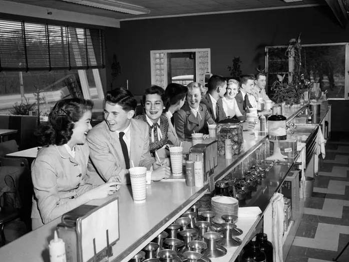

Our Story
Our story starts with our founder wanting to create a dining experience that appeal to the guests. So he wanted to start all the way from the cuterly we provide, which is one of the reasons he decided to name our Diner "The Vintage Fork Diner". It was founded in 1998, and it took multiple years of work to finally create the environment we have today and it couldn't have been done if it wasn't for our guests and workers who strive to keep this diner going.
